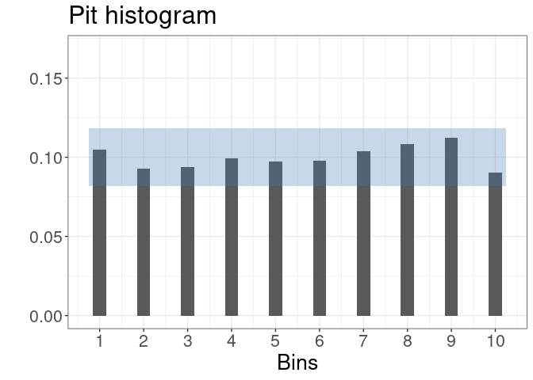
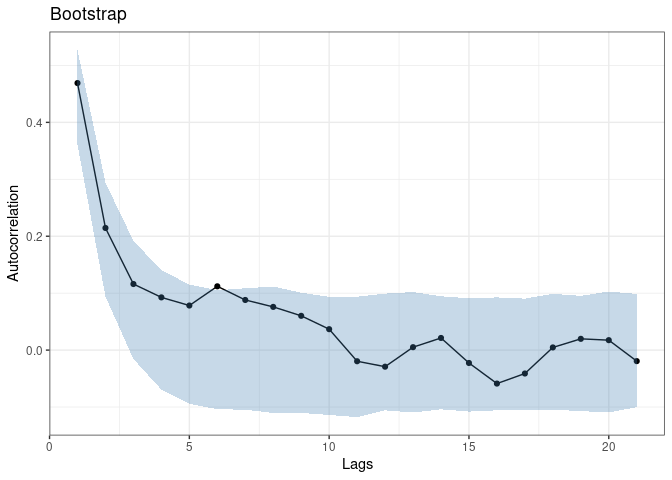
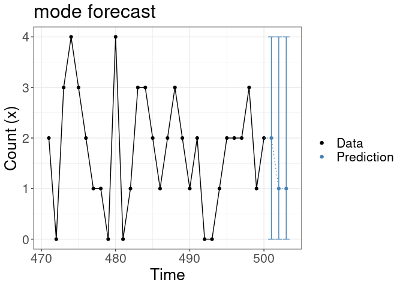
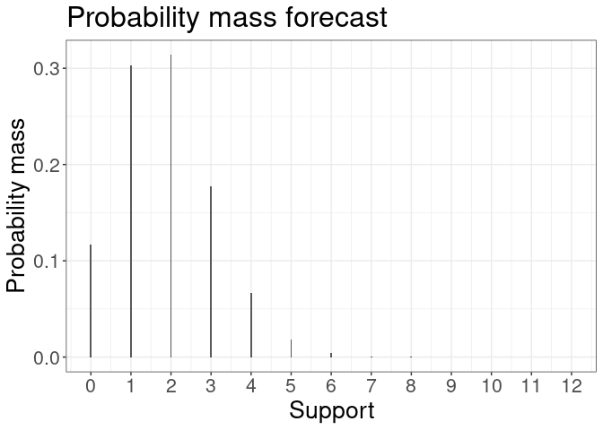
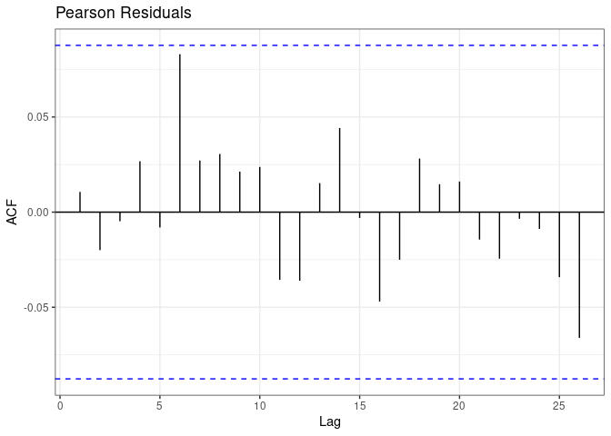

Functions to analyse time series consisting of low counts are provided. The focus in the current version is on practical models that can capture first and higher-order dependence based on the work of Joe (1996). Both equidispersed and overdispersed marginal distributions of data can be modelled. Regression effects can be included. Fast and efficient procedures for likelihood based inference and probabilistic forecasting are provided as well as useful tools for model validation and diagnostics.

Details
The package allows simulation of convolution-closed count time series models with the cocoSim function. Model fitting is performed with the cocoReg routine. By passing a cocoReg-type object, cocoForecast computes the one-step ahead forecasting distribution. cocoBoot, cocoPit, cocoScore, and cocoResid provide routines for model assessment. The main usage of the package is illustrated within the cocoReg function chapter. For more details and examples of the functions see the respective sections within this vignette.
By default, our functions make use of an RCPP implementation. However, users with a running Julia installation can choose to call Julia in the background to run their functions by specifying it in the R function input. This option is particularly useful for the regression (), where a complex likelihood function must be numerically evaluated to obtain parameter estimates. By leveraging Julia’s automatic differentiation capabilities, our functions can take advantage of numerical gradients, leading to increased numerical stability and faster convergence.
Despite these advantages, we found that both the Julia and RCPP implementations produced qualitatively similar results in all our tests. As a result, we have decided to use the RCPP implementation as the default option to make our package accessible to non-Julia users.

Installation
You can install the latest stable version of coconots from CRAN with:
install.packages("coconots")or the latest version from GitHub with:
devtools::install_github("manuhuth/coconots")Example using RCPP implementation
Coconots runs on an RCPP and a Julia implementation. RCPP is the default. The regression results can be summarized using the summary function.
library(coconots)
length <- 500
pars <- c(1, 0.4, 0.2)
set.seed(12345)
data <- cocoSim(order = 1, type = "GP", par = pars,
length = length)
coco <- cocoReg(order = 1, type = "GP", data = data)
#> Registered S3 method overwritten by 'quantmod':
#> method from
#> as.zoo.data.frame zoo
summary(coco)
#> Coefficients:
#> Estimate Std. Error t
#> lambda 1.0548 0.0930 11.3367
#> alpha 0.4201 0.0373 11.2508
#> eta 0.1609 0.0329 4.8958
#>
#> Type: GP
#> Order: 1
#>
#> Log-likelihood: -885.012Example using Julia implementation
In order to use the Julia functions, you need a running version of Julia installed. You need to install the relevant Julia packages once.
coconots::installJuliaPackages()
#> Starting Julia ...If installed, the Julia implementation can be addressed by setting the julia argument to true. In this case we need to set the seed within the simulation function in order to pass it to Julia.
Model assessment
We provide different tools for model assessment. One can even use the RCPP implementation for the regression and do model assessment with the Julia implementation. If this is desired, one needs to specify in the output of the regression that it should be Julia compatible. Note that this is not necessary if the Julia option in the regression is true.
library(coconots)
length <- 500
pars <- c(1, 0.4)
set.seed(12345)
data <- cocoSim(order = 1, type = "Poisson", par = pars, length = length)
coco <- cocoReg(order = 1, type = "Poisson", data = data,
julia_installed=TRUE)
(scores <- cocoScore(coco, julia = TRUE))
#> $log.score
#> [1] 1.501935
#>
#> $quad.score
#> [1] -0.2532058
#>
#> $rps.score
#> [1] 0.619761
pit <- cocoPit(coco, julia = TRUE)
plot(pit)


plot(forecast[[1]]) #plot density of one-step ahead forecast

Compare Models
Model selection is facilitated by providing quick and easy access to the scoring metrics.
library(coconots)
length <- 500
pars <- c(1.3, 0.25, 0.03, 0.2, 0.3)
set.seed(12345)
data <- cocoSim(order = 2, type = "GP", par = pars, length = length)
soc <- cocoSoc(data, julia=T)
#> [1] "Computing PAR1 model."
#> [1] "Computing PAR2 model."
#> [1] "Computing GP1 model."
#> [1] "Computing GP2 model."
summary(soc)
#> Logarithmic Score Quadratic Score Ranked Probability Score
#> 1 PAR1 2.265970 -0.1221436 1.302572
#> 2 PAR2 2.264753 -0.1223451 1.301770
#> 3 GP1 2.164318 -0.1363304 1.263041
#> 4 GP2 2.161843 -0.1364925 1.261362